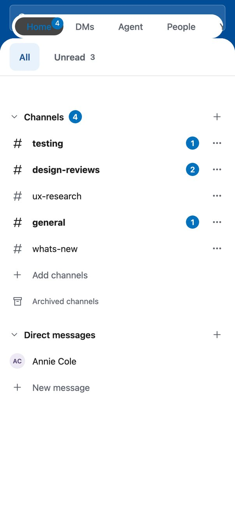
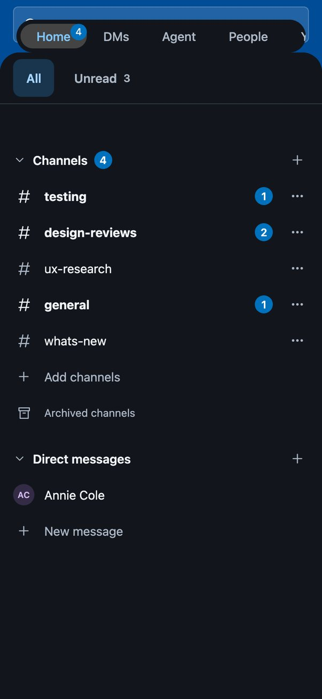
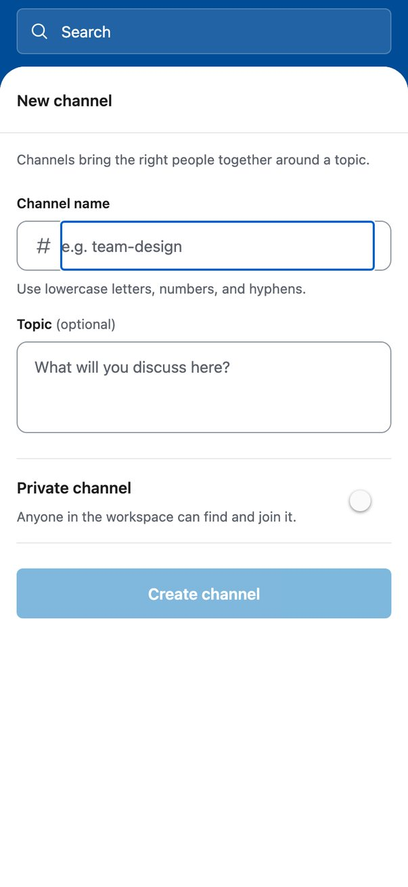

What Servant does
Five tabs cover everything: Home for channels, DMs for direct messages, Agent for your private chats with the agent, People, and You.




Your first ten minutes
Everyone does these, whatever your role.
- Install Servant. Use the iPhone or Android download link your team provides. While store review is pending, your team may send a TestFlight or Firebase App Distribution invitation.
- Join your team's server. Open the invite link or scan the QR code you were sent. To paste a link, tap I'm new here on Welcome, paste it and tap Continue. Read the terms, check the three boxes, tap Agree and join, then enter your name. If it is already taken, add an initial.
- Join your channels. On Home, tap Add channels and join #general plus the channels for your work, such as #ux-research, #design-reviews or #testing.
- Say hello in #general. It's the quickest way to check everything works.
- Ask the agent something. Open the Agent tab, tap New chat and try one of the prompts below.
Filing issues
Ask the agent to file it. It writes a GitHub issue in the right repository, with steps, the build and the labels your team uses.
- Ask the agent. Describe the problem in an Agent chat, or type @s in the thread where it came up. Attach a screenshot if you have one.
- It writes the GitHub issue. A clear title, steps to reproduce, expected and actual result, build number and device, and a label such as
bugorenhancement. - It links back. The agent replies with the issue link, so the thread and the issue point at each other.
- QA gets it back. When the pull request that fixes the issue is merged, the issue closes and whoever reported it can check the next build.
If your team tracks work in another tool, connect it to GitHub issues the way you already do. Servant only writes the GitHub side.
An issue the agent writes looks like this:
Title: Notices tab shows English date in Spanish
Steps to reproduce
1. Set the phone language to Spanish
2. Open the example app and sign in
3. Open Notices
Expected: dates read "3 de noviembre de 2026"
Actual: dates read "November 3, 2026"
Build: 2026110207 · iPhone 15, iOS 26.1
Labels: bugGo deeper for your role
Pick your role. Servant remembers your choice on this device.
Developers
Servant has three parts: an Expo app, a small Node server on the owner's Mac, and the Hermes agent behind it. The phone talks to the server through an encrypted relay.
Phone (Servant app)
│ app-to-Mac encryption inside HTTPS
▼
Relay or tunnel ──▶ Server (server/, on the Mac) ──▶ Agent (Hermes, localhost only)Get the code running
git clone https://github.com/slavingia/servant.git
cd servant
node --test server/ # server tests, temporary databases and a fake agent
cd app && npm ci
npm test && npm run typecheck && npm run lintTest on your own server, never the real one
All manual testing happens on an isolated test server with its own data, keys and port. A different account on the real server still changes real data.
node scripts/test-instance.mjs init
node scripts/test-instance.mjs start # http://127.0.0.1:8788
node scripts/test-instance.mjs invite --name 'QA Owner' --role owner
node scripts/test-instance.mjs invite --user <existing-id> # second device, same personRead next
docs/testing.mdfor the test server and what it can't do (no agent, no push)docs/deployment.mdfor staged releases, the worker and rollbackdocs/agent-turns.mdfor Stop, approvals and how replies survive a locked phonedocs/encryption.mdanddocs/ato-data-flows.mdfor the security boundary
Functional testers
Update through the store or testing service you used to install Servant. Test builds use TestFlight on iPhone and Firebase App Distribution on Android. Both platforms ship with the same build number, so say which number you're on when you report something.
What to check on each new build
- Join with an invite link and with a QR code
- Post in a channel, reply in a thread and react to a message
- Send a DM and watch Sent change to Read
- Attach a photo, a video and a file. Up to four files at once
- Ask @s in a thread, then lock your phone and reopen. The reply should still arrive
- Start an agent chat and tap Stop partway through
- Swipe left on a DM to archive it, then find it under Archived
- Turn on airplane mode, send a message, turn it off. The draft should not be lost
- Repeat a few screens in dark appearance and at a large text size
Reporting a bug
Report it from the screen that's wrong. Say what you did, what you expected and what happened. The screenshot and your build number go with the report. For your team's own apps, ask the agent to file a GitHub issue. See Filing issues.
UX designers
Servant's visual rules live in docs/design-system.md. The essentials:
- A navy band (
#0A2240) at the top with a white status bar - Buttons in the brand's lit navy (
#4E61D6) with white labels, never white on tennis yellow - Tab titles left-aligned, 20pt in from the edge, with no Back button
- Pushed screens have a centred title and Back at 20pt
- Buttons say what they do in plain words. No icon when the word is obvious
- Destructive actions are a red link (
#D11242)
Proposing a change
- Post the idea in #design-reviews with a capture of the screen as it is today
- For a web prototype, start a Prototyping chat in the Agent tab, or work in your team's prototypes repository
- Show real captures in light and dark, at the same screen size, before and after
- Tag content and research in the thread for wording and evidence
UX content strategists
Every word in Servant is in the screen files under app/src/app/, for example invite.tsx or welcome.tsx. Ask the agent to find a string and it will show you the file and line.
House style
- Plain and letter-like. Spell out one to nine
- Sentence case for headings and buttons
- No full stop at the end of a one-sentence line
- Say "server", never "hub"
- Settings rows: the label is the thing you turn on, with a one-line subtitle that fits a 375pt screen in English and Spanish
- Call each product by its current name, never an old code name
How content reviews reach you
When an automated research review finds a wording problem in a prototype, it can tag you on GitHub with the finding, its priority and a link to the evidence. Reply on the issue or in #design-reviews.

UX researchers
You'll mostly use two repositories, and Servant ties them together. The names here are examples: use your team's own.
example-org/research: past study reports and the published survey aggregatesexample-org/prototypes: clickable prototypes, published reviews and dashboards, on GitHub Pages
- 1Query the research repositoryFind studies and survey evidence
- 2Draft a studyAsk the agent, then review it
- 3Build a dashboardFrom published aggregates only
- 4Automate reviewsAnd tag people for feedback
1Query the research repository on GitHub
Keep past study reports in one folder per study (for example under research/) and approved survey aggregates in a folder of their own. Then the GitHub CLI and the agent can both find them.
Find studies and files with the GitHub CLI
# Browse the study folders
gh api repos/example-org/research/contents/research --jq '.[].name'
# Search the whole repository for a phrase
gh search code "payment plan" --repo example-org/research
# See what's being added or discussed
gh pr list -R example-org/researchOr ask the agent
When the research repository is a project in Servant, the agent can read it in any chat in that project. Ask a question and it searches the reports and aggregates, then answers with the files it used.
AGENTS.md so the agent follows them too.2Ask the agent for a study draft
The agent can draft a research plan, a screener, a discussion guide, a survey or the structure of a card sort or tree test, grounded in what your repository already says. You review and own the result.
- Start an Agent chat in the research project, or type @s in a #ux-research thread.
- Say the question you need answered, who the participants are, the method and how long sessions run.
- Ask it to cite the past studies it drew on, so you can check them.
- Ask it to save the draft as a file in a new folder under
research/and open a pull request, then edit it there with your team.
A tree test's menu is easiest to review written one item per line, indented two spaces per level:
payments | Payments
make-payment | Make a payment
payment-history | Payment history
records | Records
documents | Documents3Build a dashboard from published aggregates
If your prototypes repository publishes to a public website, only published aggregates can go on a dashboard there: no comment text, excerpts or respondent data. Get the owner's approval before publishing a new one.
- Make a folder in the prototypes repository, for example
research-dashboard/. - Write a small script that copies an explicit list of aggregate fields from the research repository into
data.json. - Have the page read
data.json. Show missing values as unavailable and keep each value's source and sample size. - Add a README with the purpose, data boundary and how to refresh, then commit and push.
To refresh it later, re-run the script, check the page, and push. Never edit the data by hand.
4Automate research reviews and tag people for feedback
The agent can review a prototype against your research evidence and write up findings, each with its priority, evidence and limits. Mark every such review as an automated first pass, not an expert sign-off.
Publish a review and tag owners
- Ask the agent to publish it, for example as a page in the prototype's
design-review/folder. - Have it tag the design owner for design changes and the content owner for content changes, on the prototype's feedback issue.
- Agree on quiet hours as a team, and ask the agent to hold tags written overnight until the morning.
Doing it yourself on GitHub
# Comment on a feedback issue and tag owners
cat > tag.md <<'EOF'
@jo-park, this needs a design change:
- review-01 (High): show what is still to do before the form can be sent
@ana-ruiz, this needs a content change:
- review-02 (Medium): spell out every abbreviation the first time it appears
Review: https://example-org.github.io/prototypes/sign-in/design-review/
EOF
gh issue comment <issue-number> -R example-org/prototypes --body-file tag.md
# Ask for review on a pull request
gh pr edit <pr-number> -R example-org/research --add-reviewer <github-login>
# Find what's waiting on you
gh search issues --mentions @me --state openWrite each finding as one line: its ID, priority, and the change. Link the review so people can see the evidence.